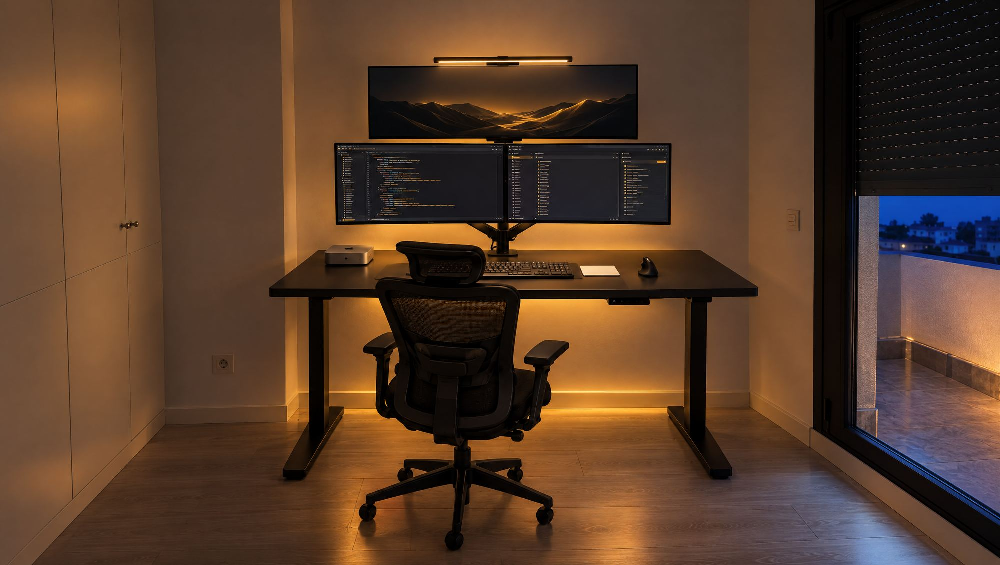
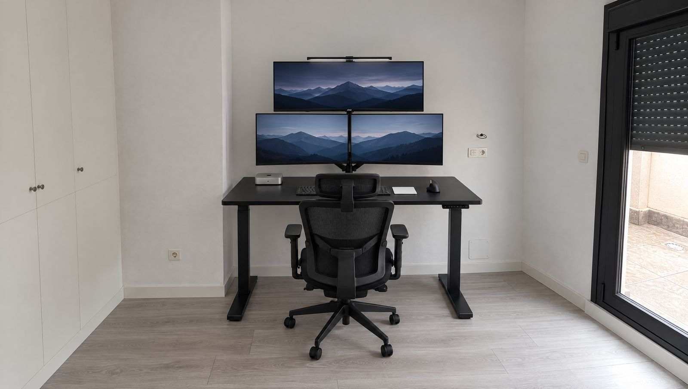

Formación
Una mañana con tu equipo viendo qué se puede hacer hoy, con casos que funcionan en una empresa de verdad. Sin teoría de relleno.

Consultoría de IA y automatización de procesos
Formo a tu equipo con casos reales y analizo vuestros propios procesos para decirte, uno por uno, qué parte puede hacer ya la inteligencia artificial y cuánto tiempo os devuelve.
Son cifras de mi trabajo de lunes a viernes, a noviembre de 2026: dirijo el crecimiento y la inteligencia artificial de una distribuidora de recambios de automoción.
Una mañana con tu equipo viendo qué se puede hacer hoy, con casos que funcionan en una empresa de verdad. Sin teoría de relleno.
Me grabáis cómo hacéis el trabajo. Os devuelvo, proceso por proceso, qué se puede automatizar y qué no merece la pena tocar.
Dejo un proceso real funcionando en vuestros ordenadores y el contexto preparado para que el equipo siga solo.
Servicios
Cuanto más me enseñéis de cómo trabajáis, más concreto es lo que os lleváis. Cada nivel incluye el anterior.
Qué puede hacer hoy la IA en una empresa como la tuya.
Una mañana completa con tu equipo. Enseño casos reales que ya funcionan: un blog que se escribe solo y lo revisa un experto, un canal de vídeo con avatar, un panel que junta ocho fuentes de datos, la revisión de facturas de proveedor y un agente que atiende por correo a toda una plantilla.
Una mañana
La misma mañana, pero la mitad va de vosotros.
Antes de la sesión subís a una carpeta vídeos de pantalla de vuestros procesos: contabilidad, compras, pedidos, lo que más tiempo os quite. Los analizo con IA y en la formación vemos, uno por uno, qué ha entendido y qué parte se puede automatizar.
Una mañana + análisis previo
Salgo de vuestra oficina con un proceso funcionando.
Después de ver vuestros vídeos os mando otro con lo que ha entendido la IA y entre 15 y 20 preguntas. Con vuestras respuestas preparo el contexto de trabajo de cada puesto: una carpeta lista para que el asistente sepa cómo trabajáis, con qué programas y con qué reglas. Luego vamos dos mañanas: una para la formación y otra para dejar un proceso real en marcha.
Una parte del precio se paga solo cuando ese proceso queda funcionando.
Dos mañanas + trabajo previo
Todo lo que sabe hacer tu empresa, escrito y ordenado.
Con los vídeos de todos los departamentos preparo guías paso a paso de cómo se hace cada trabajo a mano y una base de conocimiento que se puede consultar. Sirve para dos cosas: que quien entra nuevo aprenda sin depender de nadie, y que el día que la IA falle sepáis hacerlo igual.
Proyecto completo
Se puede añadir a cualquiera
Me siento cuatro o cinco horas con una persona del departamento y hacemos su proceso juntos, de principio a fin. Es la forma más rápida de que alguien pase de mirar a usarlo.
El precio depende del tamaño de la empresa y de cuántos procesos entren. Te lo paso cerrado y por escrito antes de empezar.
Cómo trabajo
No llego con una herramienta buscando dónde meterla. Miro cómo trabajáis de verdad y decido con vosotros qué merece la pena.
Cada persona graba su pantalla mientras hace su proceso, de principio a fin, y lo sube a una carpeta que os paso.
Analizo cada vídeo y saco el proceso paso a paso: qué programas se usan, qué reglas se aplican y dónde se va el tiempo.
Os mando un vídeo con lo que se ha entendido y las dudas que quedan. Vosotros corregís y contestáis.
En la formación veis vuestros propios casos: cómo quedaría cada proceso y cuánto tiempo ahorra.
Instalamos el contexto en vuestros ordenadores y ponemos un proceso en marcha con la persona que lo hace.
Cuanto mejor me contestéis, mejor sale. Si nadie de la empresa se implica, prefiero decirte que no.
El agente prepara, propone y hace lo repetitivo. Lo que mueve dinero o compromete a la empresa lo sigue validando una persona.
Cada proceso que se automatiza se documenta también sin IA. Si un día el servicio se cae, el trabajo no se para.
Los vídeos y los datos se usan solo para vuestro proyecto. Firmamos confidencialidad antes de que subáis nada.
Mi escritorio
Creo que dentro de muy poco cada persona será un director de orquesta: varios agentes trabajando a la vez y alguien con criterio decidiendo. Este es mi atril.

Trayectoria
Entré a hacer SEO en una distribuidora de recambios. Me aburría repetir lo mismo, así que enseñé a una máquina a hacerlo. Después vino el resto de la empresa.
Grado superior en la Cámara de Comercio de Madrid y Marketing en ESIC, trabajando a la vez. Por mi cuenta aprendí cómo funcionan los mercados financieros, y de ahí saqué mi forma de decidir: pensar en probabilidades.
El día que salió me pasé seis horas con él. A la mañana siguiente lo propuse en la empresa. La primera cuenta fue solo para marketing; cuando pudo analizar un Excel, la pidieron los demás departamentos.
En una presentación puse que en el futuro cada persona dirigiría varios agentes desde un chat. Me dijeron que la quitara por futurista. La dejé.
El blog, las 70.000 descripciones de producto, el canal de vídeo con mi avatar y mi voz, y el panel que lo mide todo. El trabajo de contenidos de dos personas, funcionando solo y revisado por expertos.
Monté un agente al que cualquier compañero le escribe un correo y recibe el trabajo hecho. En cinco meses, 49 personas le han hecho 948 encargos.
Dirijo el crecimiento y la IA de la empresa: las normas de uso, la formación de la plantilla y de la dirección, y el plan para llevar los agentes a cada departamento. También doy charlas a otras empresas.
Ninguna automatización es segura al cien por cien. Se decide como en los mercados: qué gano si sale bien, qué pierdo si sale mal.
Las mayores empresas del mundo están poniendo ahí su inversión. No es una moda que vaya a pasar.
Lo que la IA sabe hacer sola se duplica cada pocos meses. Quien empieza antes acumula ventaja.
Contacto
Si estás leyendo esto es porque te he pasado yo el enlace. Contéstame por donde te lo envié con estas tres cosas y te digo qué opción encaja mejor y cuánto cuesta.